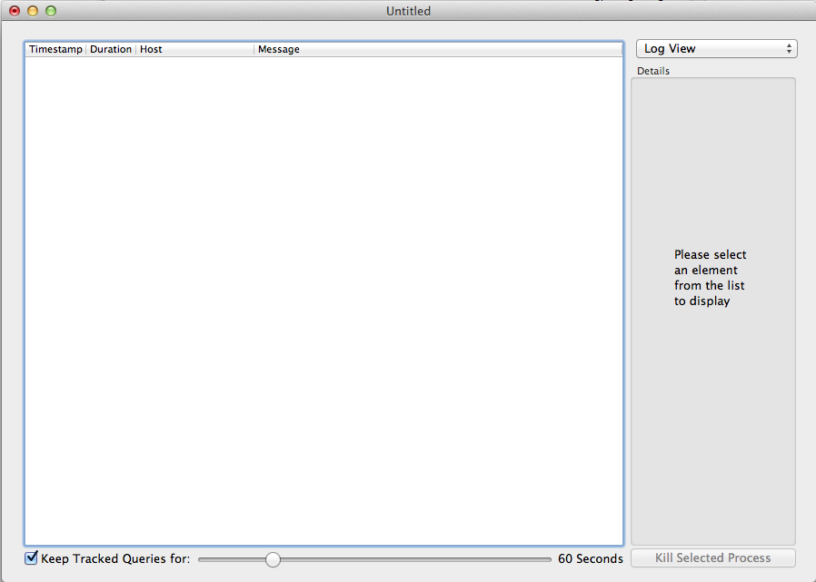
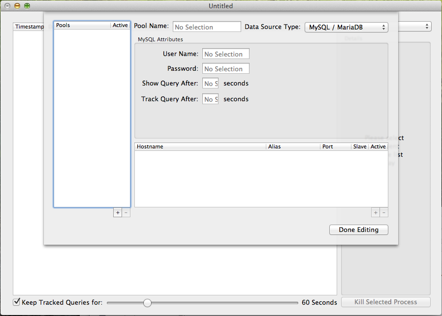
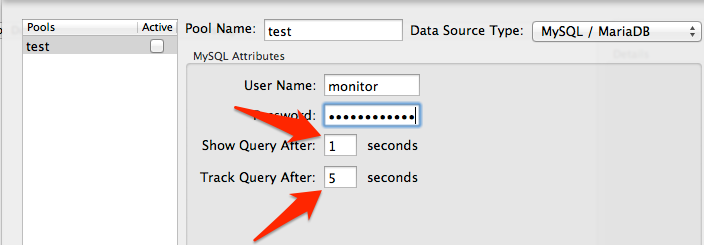
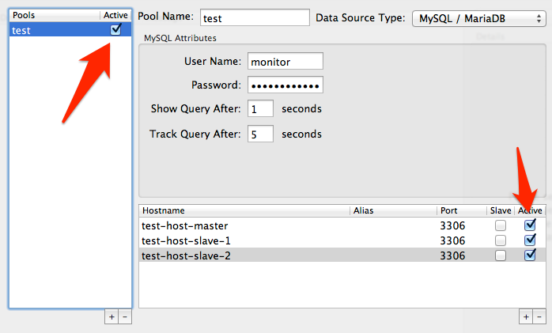
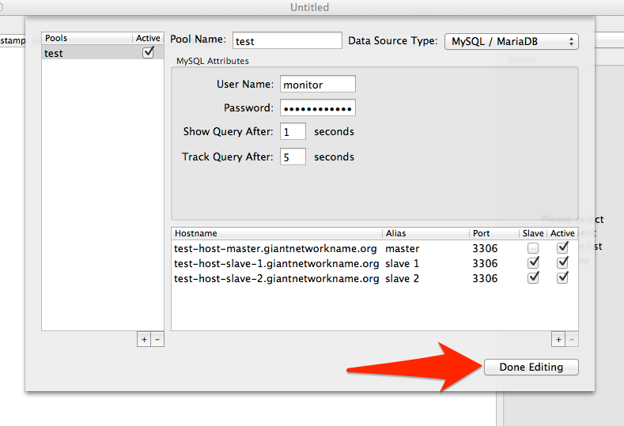
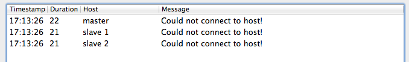

DB Monitor Configuration
Getting started with DB Monitor is simple!
When first first launched you should see a window that looks like this:

If you don't see one, don't panic. Simple select File->New from the Application Menu:
To Edit the configuration, simply hit Command-, or select the Document->Configure Pools option from the Application Menu:
This will bring up the configuration pane, which will look like this:

Our first step will be to create a new pool to hold a group of servers. On the left hand side of the panel, you should see a Pools list. Click the plus sign in the bottom right hand corner to add a new pool:
This will add a new pool to be edited to your configuration which should be automatically selected by default:
You can name the pool by simply typing into the column on the left OR by typing into the text entry box just to it's right.
A pool of servers is a group of hosts that perform a similar function, and use the same username/password to log into them. Your cluster may only have one master and one group of slaves, and you may only need a single pool to describe your infrastructure. Or you may have several projects, each with its own master and set of slaves. I find it is good to group systems into pools by master, myself. You may make pools for dev, qa, staging, production, etc - or you can separate them into individual documents so you can have multiple windows open showing different clusters or systems, it's entirely up to you!
Let's go ahead and enter a username and password combination to log into this pool of systems now:

Next as you can see it has automatically filled out two numbers. The first is 'Show Query After' and the second is 'Track Query After'.
The first number tells the application how many seconds to wait for a query to run before you want to display it in the event log. Showing a query doesn't mean that you necessarily want to track more information about that query, only that you are interested in seeing it displayed in the log at runtime (default value is 1 second).
The second number tells the application how many seconds is too long for a query to run. Once a running query has been running for that amount of time (default value is 5 seconds) it highlights the query in red in the event log. If you have Query Tracking enabled it will also leave that query in the event log, even after it has stopped running for inspection later. We'll look at Query Tracking more when we go over the Event Log Viewer.
Now we're ready to add some hosts to our pool! Start by clicking the plus sign at the bottom right hand corner of the lower table:
Once you've done that, just select the text area under Hostname and start typing. It will fill out the Port column to 3306 by default for MySQL, but you can edit that also.
Rinse and repeat until you've added all of the hosts that you want to put in this pool:
But wait! If we were to hit the Done button now, nothing would show up in our event logs, because we've set no pools or hosts to active! Setting hosts or pools to Active/Inactive is a very useful way to filter out host information that you aren't interested in if you need to quickly drill down into a host or pool in order to get a better idea of what is going on. It's also a good way to filter OUT a spammy host that is having problems. Let's check off Active for all of the hosts we've entered now:

We did put some replicated slaves in the list, so we should probably check them off as slaves also so we gather slave statistics:
But we've skipped a whole column! There's an Alias column that you can put a text string into if your host names are very long or you need to put a FQDN in so that your hosts resolve properly. Or, if you have several MySQL servers that are running off different ports (or you're doing port forwarding across an SSH tunnel). Let's pretend that my hostnames need FQDN so I'm going to enter some short names for them. Unlike host names, I can put as many spaces in the Aliases as I'd like:
Now we're done configuring our first pool! Simply hit the Done button in order to return to the event Screen!

You'll know you've probably entered something wrong if you immediately see a screen like this once you exit out, make sure you've entered your username and password correctly!

And make sure to save your document by hitting Command-S or selecting File->Save from the Application Menu!